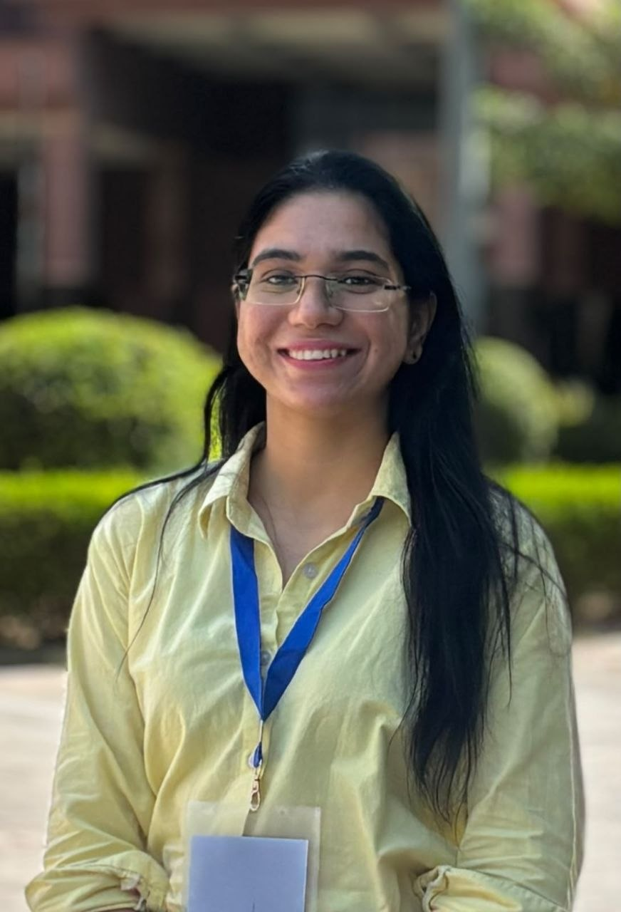
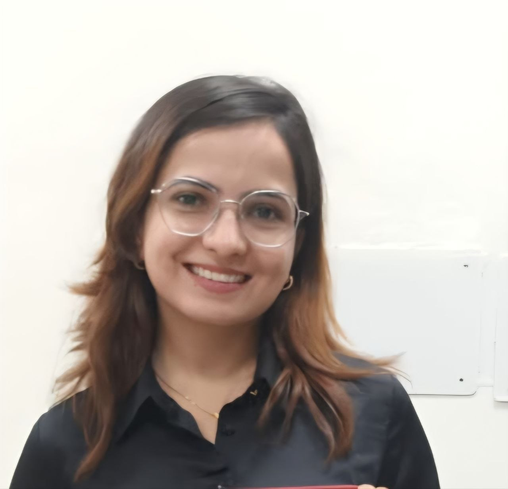

Amyloid Biology & Protein Aggregation
Protein misfolding, nucleation, fibril growth and structure–function relationships.
We investigate how proteins reorganize into amyloid and amyloid-like assemblies—and how these structures influence biology, food systems and emerging biomaterial applications.
Explore our research Meet the labThe Amyloid Biology Lab is part of the Department of Biotechnology at the Central University of Rajasthan. Our research explores structure–function relationships of protein aggregation and amyloid formation, spanning disease-associated systems and food-derived protein assemblies.
We seek to understand the factors governing aggregation in food system and translate amyloid-like fibrils into meaningful scientific and technological applications.
Protein misfolding, nucleation, fibril growth and structure–function relationships.
Amyloid formation and aggregation-related mechanisms relevant to proteinopathies.
Aggregates formed during food processing and their structural and functional applications.
Research interests include protein aggregation, amyloid structure–function relationships, disease-associated amyloids and amyloid-like aggregates in food systems.
Protein AggregationAmyloidsFood ProteinsProtein Biophysics
Our former research scholars continue to contribute to science and research across diverse areas.

Poonia V., Yadav J.K. · Current Protein & Peptide Science
Poonia V., Yadav J.K., Gavahian M. · Critical Reviews in Food Science and Nutrition
Malik S., De I., Yadav A.S., Poonia V., Gaur K., Goyal P., Singh M., Yadav J.K. · Biological Chemistry
Malik S., Yadav J.K. · Current Protein & Peptide Science
Pippal B., Chaudhuri P., Rani K., Yadav J.K., Jain N. · ACS Chemical Neuroscience
Jangir N., Bangrawa S., Yadav T., Malik S., Alamri S.A., Galanakis C.M., Singh M., Yadav J.K. · Journal of Food Biochemistry
Malik S., De I., Singh M., Galanakis C.M., Alamri A.S., Yadav J.K. · Food Chemistry
Yadav J.K. · Journal of Peptide Science
Mittal C., Kumari A., De I., Singh M., Harsolia R.S., Yadav J.K. · International Journal of Biological Macromolecules
Mittal C., Harsolia R.S., Singh M., Yadav J.K. · Indian Journal of Biochemistry and Biophysics
Shalini G., Yadav J.K. · Journal of Protein & Proteomics
Schimansky A., Yadav J.K. · International Journal of Biological Macromolecules
Ram L., Mittal C., Harsolia R.S., Yadav J.K. · The Protein Journal
Harsolia R.S., Kanwar A., Gour S., Kumar V., Bansal R., Kumar S., Singh M., Yadav J.K. · International Journal of Biological Macromolecules
Kumar V., Kumar P.G., Yadav J.K. · European Biophysics Journal
Gour S., Kumar V., Singh A., Gadhave K., Goyal P., Pandey J., Giri R., Yadav J.K. · Journal of Peptide Science
Brünnert D., Shekhawat I., Chahar K.R., Ehrhardt J., Pandey J., Yadav J.K., Zygmunt M., Goyal P. · Journal of Reproductive Immunology
Gour S., Kumar V., Rana M., Yadav J.K. · Journal of Peptide Science
Kumar V., Gour S., Verma N., Kumar S., Gadhave K., Mishra P.M., Goyal P., Pandey J., Giri R., Yadav J.K. · Journal of Peptide Science
Röcker A., Roan N.R., Yadav J.K., Fändrich M., Münch J. · Chemical Communications
Kumar V., Gour S., Peter O.S., Gandhi S., Goyal P., Pandey J., Harsolia R.S., Yadav J.K. · Current Eye Research
Wulff M., Baumann M., Thümmler A., Yadav J.K., Heinrich L., Knüpfer U., Schlenzig D., Schierhorn A., Rahfeld J., Horn U., Balbach J., Demuth H., Fändrich M. · Angewandte Chemie International Edition
Fluorescence-based aggregation assays.
Secondary-structure analysis and conformational transitions.
Concentration analysis and characterization.
ThT fluorescence, Congo Red binding and related approaches.
Hydrophobicity and physicochemical measurements.
Static simulated gastrointestinal digestion approaches.
We welcome scientific interactions, collaborations and research discussions in protein aggregation, amyloid biology and food protein systems.
Amyloid Biology Lab
Lab No. 104
Department of Biotechnology
Central University of Rajasthan
NH-8, Bandarsindri, Kishangarh
Ajmer, Rajasthan 305817, India